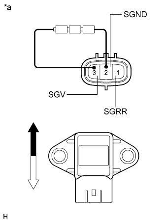

REAR ACCELERATION SENSOR > INSPECTION |
| 1. INSPECT REAR ACCELERATION SENSOR |
|  |
Connect 3 dry batteries of 1.5 V in series.
Connect the positive (+) end of the batteries to terminal 3 (SGV) of the acceleration sensor and the negative (-) end of the batteries to terminal 2 (SGND). Then measure the voltage between terminal 1 (SGRR) and terminal 2 (SGND).
Measure the voltage according to the value(s) in the table below.
| Tester Connection | Sensor Condition | Specified Condition |
| 1 (SGRR) - 2 (SGND) | Sensor stationary | 2.0 to 2.5 V |
| Sensor tilted | Changes between 0.9 and 2.3 V |
| *a | Component without harness connected (Rear Acceleration Sensor) |
 | Top |
 | Bottom |